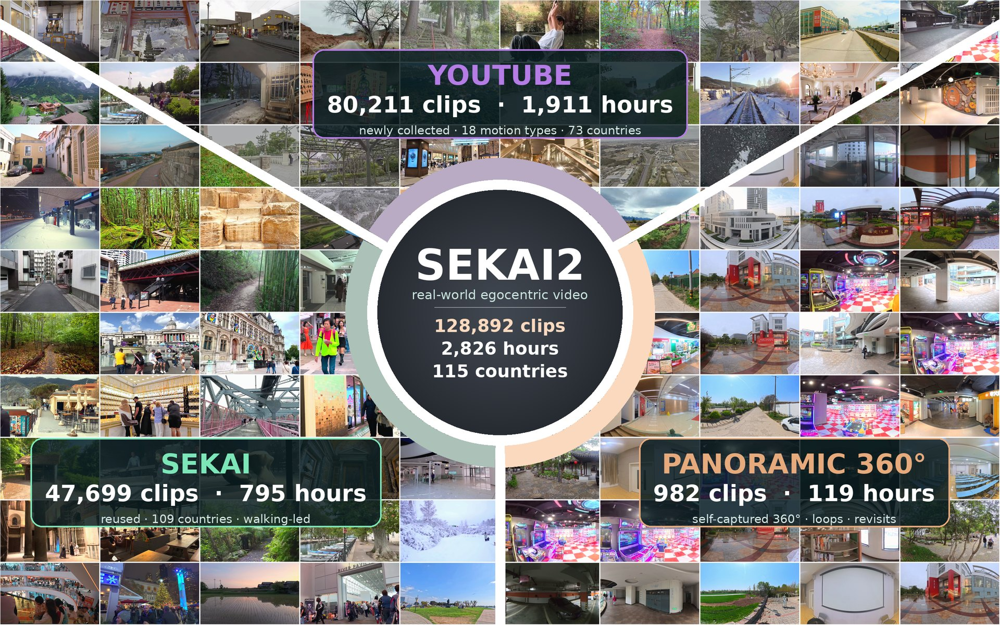

Sekai-1
A carefully filtered inheritance of geographically diverse real-world videos.
Real data for interactive world models
Sekai2 is a geographically diverse, long-horizon real-world video dataset with camera trajectories and temporally grounded structured annotations.
What the dataset is made of
Every frame below is real released footage. Each wedge is one source — reused Sekai clips, a fresh YouTube collection, and our own 360° captures — with what it contributes to the 128,892 clips and 2,826 hours.

Open full size ↗One dataset, many ways to move
From an eye-level walk through a crowded street to a drone climbing above a mountain ridge, Sekai2 captures the motion, scale, and visual diversity required for long-horizon world modeling.
Geographic diversity
Coverage spans 115 countries — cities, natural environments, infrastructure, and cultures worldwide. Hover any shaded country to see its clip count and preview representative footage.
Hover or tap any shaded country · 98 countries are interactive
Explore the collection
Browse representative data modalities. Each panel is prepared for a real video asset and can later be connected to the final selected examples.
Structured semantics
Clip-level fields summarize persistent content and motion, while grounded segments describe how the scene evolves over time.
Caption case studies
Each example connects sampled frames, a released ViPE camera trajectory, global structured fields, and temporally grounded segment descriptions.
Camera as supervision
Released camera trajectories expose real motion patterns for trajectory-conditioned generation and long-horizon navigation.
Panoramic capture
Native 360° captures include long, revisiting trajectories designed to expose loop structure and support full-accumulation reconstruction.
Selected panoramic sequences span sharp turns, serpentine paths, obstacles, and revisitation loops. Color encodes progression along each recovered trajectory.
Three complementary sources
A carefully filtered inheritance of geographically diverse real-world videos.
Newly collected, deduplicated web video emphasizing long and varied camera motion.
Self-captured 360° trajectories with loops, revisitation, and challenging spatial structure.
Build with Sekai2
Paper, dataset access, code, benchmark splits, and model checkpoints will appear here.